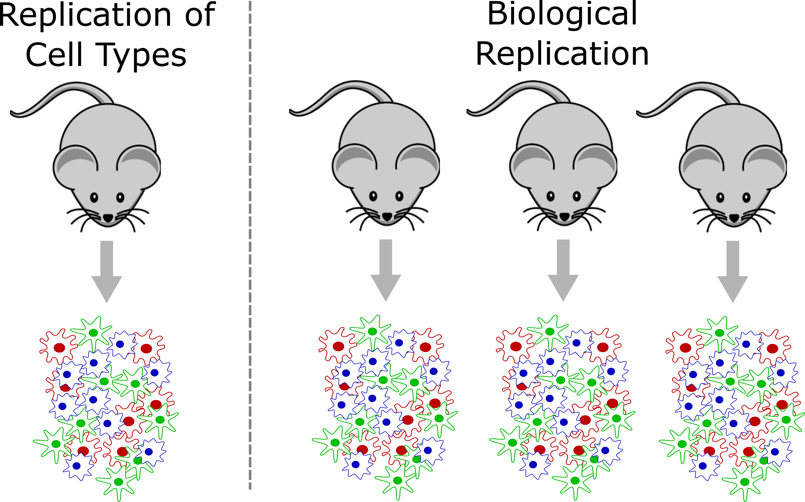
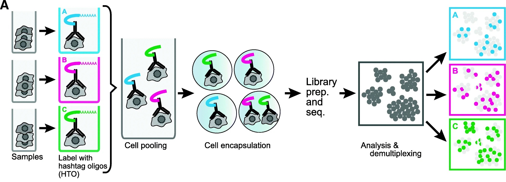

Experimental Considerations
Overview
Teaching: 45 min
Exercises: 5 minQuestions
How do I design a rigorous and reproducible single cell RNAseq experiment?
Objectives
Understand the importance of biological replication for rigor and reproducibility.
Understand how one could pool biological specimens for scRNA-Seq.
Understand why confounding experimental batch with the variable of interest makes it impossible to disentangle the two.
Understand the different data modalities in single-cell sequencing and be able to select a modality to answer an experimental question.
In this lesson we will discuss several key factors you should keep in mind when designing and executing your single cell study. Single cell transcriptomics is in many ways more customizable than bulk transcriptomics. This can be an advantage but can also complicate study design.
To begin, we note that you should be aware of the distinction between cells loaded vs cells captured. In a 10X scRNA-Seq study you prepare a cell suspension and decide how many cells should be loaded onto the 10X Chromium instrument. The cells flow through the microfluidics into oil-water emulsion droplets, but not all cells are captured. Typically somewhere between 50-70% of cells are captured. 10X provides estimates for the capture rates of samples profiled using their 3’ gene expression kit here.
Doublets/multiplets - a ubiquitous property of droplet single cell assays
In droplet single cell transcriptomics, a key reason the technology “works” is because most droplets contain at most one cell. After all, if droplets contained more than one cell the technology would no longer be profiling single cells! However, due to the nature of the cell loading of droplets (which can be modeled accurately using Poisson statistics), even in a perfect experiment it is inevitable that some droplets will contain more than one cell. These are called multiplets – or doublets, since the vast majority of multiple-cell droplets contain two cells. Contrast with singlets, which contain only one cell.
There are two considerations we might keep in mind when thinking about singlets vs. doublets. First, not every droplet contains exactly one gel bead. The initial paper describing the 10X technology, published in 2017, showed the following histogram:

Therefore the large majority of droplets contain zero or one gel beads. This is good. If a droplet contained, say, two gel beads, then even if a single cell was captured in that droplet it would appear to be two cells because the transcripts from that cell would be tagged with one of two cell barcodes.
The second consideration we might keep in mind when thinking about singlets vs. doublets is that it can be hard to obtain a ground truth. If, say, two cells of the same cell type were captured in a single droplet, how would we know there were two? It might be easier if two cells of very different cell types were together, since those cells would likely express very different genes. One way we can look for doublets is to run a so-called “barnyard” experiment where we mix cells from multiple species. For example, Sathyamurthy et al. 2018 link used single nucleus transcriptomics to explore the cellular heterogeneity of the mouse spinal cord. They loaded mouse and human cells together and showed that only a small number of droplets appeared to contain both a human and a mouse cell.

It is important to realize that the doublet rate is not fixed but rather depends on the number of cells loaded into the 10X Chromium machine. The more cells are loaded, the higher the doublet rate. The figure below shows the relationship between the number of cells loaded and the doublet rate. This figure is derived from the 10X User Guide for their Chromium Next GEM Single Cell 3ʹ Reagent Kits v3.1 product, but the basic trends should hold across other versions of this product as well.

In a future lesson we will discuss software options for trying to identify and remove doublets prior to drawing biological conclusions from data. Unfortunately this process is not always straightforward and we are usually forced to accept the reality that we likely cannot remove all doublets from our data.
How to decide on the parameters of the experiment
There are a number of parameters in a typical scRNA-Seq experiment that are customizable according to the particular details of each study.
Number of cells
A typical number of captured cells (target cell number) would be 6,000-8,000 cells on a standard 10X Chromium, or 16,000-20,000 cells on the higher throughput Chromium X. At these cell capture numbers, the doublet rates are expected to stay relatively low (the JAX Single Cell Biology Laboratory estimates empirical doublet rates of 0.9% and 0.4% per 1,000 cells for Chromium and Chromium X, respectively). At these doublet rates we would expect to obtain less than 100 doublets in standard experiments. One may also choose to “overload” or “super load” the Chromium instrument. In this strategy we load more than the typical number of cells, they flow through the instrument more quickly than usual, and more droplets end up with multiple cells. Therefore our data contains more multiplets; however we also obtain more total cells. If we are in a setting where we can tolerate a higher doublet rate this may be an efficient way of profiling more cells.
Sequencing depth
There is no fixed rule for how deeply we should sequence in our scRNA-Seq experiment. Moreover, the depth of sequencing will vary significantly between cells no matter what we choose.
Nevertheless, a reasonable rule of thumb would be to sequence to a depth of approximately 50,000 - 75,000 reads per cell. If we are profiling cells that have relatively few genes expressed, such as lymphocytes, we might target a sequencing depth closer to 25,000 - 50,000 reads per cell. If we are profiling cells that express many genes, such as stem cells, we might go significantly higher, to 100,000 or even 200,000 reads per cell.
Number of samples
It is generally more economical to run at least a few scRNA-Seq samples than to run just one or two. For example, JAX’s Single Cell Biology Laboratory gives a substantial per-library discount for running 3+ samples as opposed to one or two samples. This is because the chip used to run samples through Chromium has 8 (or 16) channels which cannot be reused.
The most efficient way to organize your experiment is to design it to be run in batches of 8.
Biological replication
Proper biological replication is the cornerstone of a statistically well-powered experiment. This is recognized across nearly all of biology. In the early days of single cell RNA-Seq, the main focus of many investigations was demonstrating the technology and often biological replication was missing. As scRNA-Seq has matured, it has become increasingly important to include biological replication in order to have confidence that our findings are statistically robust.
Note that the tens of thousands of cells sequenced in a typical sample do not constitute biological replication. In order to show a biologically meaningful change in cell composition, the emergence of a particular cell subset, or difference in gene expression we need samples harvested from multiple individuals.

In a strict sense, biological replication would entail independently rearing multiple genetically identical animals, subjecting them to identical conditions, and harvesting cells in an identical manner. This is one strength of working in the mouse that we can leverage at JAX. However, there are also instances where we can obtain useful biological replication without meeting these strict requirements. For example, a disease study in humans may profile single cells collected from affected and unaffected individuals, and could provide insights as long as the groups are not systematically different. Turning to the mouse, a fine-grained time course may not require biological replication at every time point because – depending on the questions investigators wish to ask – cells from different individual mice collected at different time points might be analyzed together to attain robust results.
How many biological replicates should one collect? This question is difficult to answer with a “one size fits all” approach but we recommend an absolute minimum of three biological replicates per experimental group. More is almost always better, but there are obviously trade offs with respect to budget and the time it takes to harvest samples. There are many studies that have attempted to model the power of single cell RNA-Seq experiments, including differential gene expression and differences in cell composition. We will not discuss these studies in detail in this course, but some may be useful for your own work:
- Schmid et al. 2021. scPower accelerates and optimizes the design of multi-sample single cell transcriptomic studies. https://doi.org/10.1038/s41467-021-26779-7
- Svensson et al. 2017. Power analysis of single-cell RNA-sequencing experiments. https://doi.org/10.1038/nmeth.4220
- Davis et al. 2019. SCOPIT: sample size calculations for single-cell sequencing experiments. https://doi.org/10.1186/s12859-019-3167-9
- Zimmerman et al. 2021. Hierarchicell: an R-package for estimating power for tests of differential expression with single-cell data. https://doi.org/10.1186%2Fs12864-021-07635-w
- Vieth et al. 2017. powsimR: power analysis for bulk and single cell RNA-seq experiments. https://doi.org/10.1093/bioinformatics/btx435j
- Su et al. 2020. Simulation, power evaluation and sample size recommendation for single-cell RNA-seq. https://doi.org/10.1093/bioinformatics/btaa607
Pooling options
Given the relatively high expense of each scRNA-Seq sample and the importance of proper biological replication laid out above, the opportunity to pool samples and run them together is a powerful tool in the single cell researcher’s toolkit. In pooled single cell genomics, there are two primary methods of tracking the sample to which each individual cell belongs. First, one can attach a unique barcode (“hashtag”) to all cells of each sample, typically using an oligonucleotide-tagged antibody to a ubiquitous cell surface protein or an alternative (e.g. lipid-reactive) reagent.

(Figure from Smibert et al. 2018) This approach was pioneered by Smibert et al. The hashtag is read out in a dedicated library processing step and used to demultiplex samples based on knowledge of the pre-pooling barcoding strategy. This is the basis of the techniques known as “cell hashing”, “lipid hashing”, and the recently introduced 10X Genomics CellPlex multiplexing system. The hashtagging approach is accurate, however it is important to note that the extra experimental steps may impose obstacles. Hashtagged multiplexing requires extra sample preparation steps for barcoding, which can affect the viability and quality of cell preparations, may be less effective for certain tissues and cell types, and the increased sample handling may itself impose a significant burden in large projects.
A second, alternative, approach is to use natural genetic variation as a built-in barcode and demultiplex cells using SNVs and indels unique to each sample.

This approach was pioneered by Kang et al.. In contrast to the hashtagging approach, genetic demultiplexing requires no special reagents or additional steps, and can be used for any tissue or cell type. However, the genetic demultiplexing approach requires that the samples being pooled are sufficiently genetically distinct for them to be distinguishable using transcribed genetic variation. This condition is typically met in human studies or in studies of genetically diverse mice. Of course, this approach would not suffice for a study of a single inbred mouse strain profiled under multiple conditions. One advantage of genetic demultiplexing is that we can use the genetic information to filter out any mixed background doublets, allowing us to obtain data that contains fewer doublets than we would otherwise expect.
Avoid Confounding Batch with Experimental Variables
When designing an experiment, it is tempting to lay samples out in some order that is easy to remember. If you are performing a dose-response experiment, you might order your samples from the lowest dose to the highest dose. If you are assaying transcript levels in different tissues, you might sort the samples by tissue. However, if you maintain this order, you risk confounding single cell batches with your experimental batches. This is called “confounding” and it makes it impossible to statistically disentangle the batch effect from your experimental question.
Let’s look at an example, illustrated in the figure below. Suppose that you have analyzed cells from control and treated mice, which you keep in separate cages, as shown in the left panel below. At euthanasia, you might isolate cells from the mice in each cage sequentially. If you isolate cells from the control mice first, then those cells will sit longer than the treated cells before being delivered to the single cell core. Also, you might place the control cells in the first set of tubes and the treated cells in the last set of tubes. When you deliver your tubes to the core, they may be placed on the 10X instrument in the same order. This will confound holding time and instrument channel with the control and treated groups. A better design is shown in the right panel, in which treatment is not confounded with time and chip channel.

Recommended Reading
Luecken MD, Theis FJ (2019) Current best practices in single-cell RNA-seq analysis: a tutorial. Mol Syst Biol link
Andrews TS, Kiselev VY, McCarthy D, Hemberg M (2021) Tutorial: guidelines for the computational analysis of single-cell RNA sequencing data. Nat Protoc link
Key Points
Due to the high variance in single-cell data sets, a well-powered study with adequate biological replication is essential for rigor & reproducibility.
Increasing the number of cells also increases the multiplet rate.
Pooling cells using hashtagging is a useful way to reduce costs, but also stresses cells and may affect cell viability.
Pooling cells from genetically diverse individuals may allow cells to be demultiplexed using genetic variants that differ between samples.
Do not confound experimental batch with any technical aspect of the experiment, i.e. sample pooling or flow cell assignment.